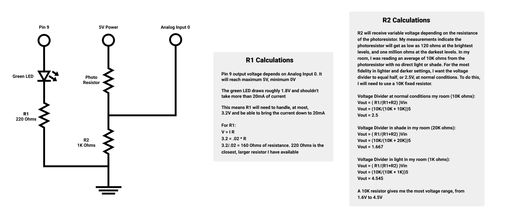

This is the schematic for my circuit. I utilized 220 Ohm resistors for the LED, and a 1000 Ohm resitor with a photoresistor for the voltage divider. Justification for these choices can be seen below

Here is a picture of my implemented circuit. Red is power, black is ground, and yellow is for the analog input
This is the code for the circuit. I have a 5 second calibration phase, then in the loop I have the sensor input mapped to the LED output.